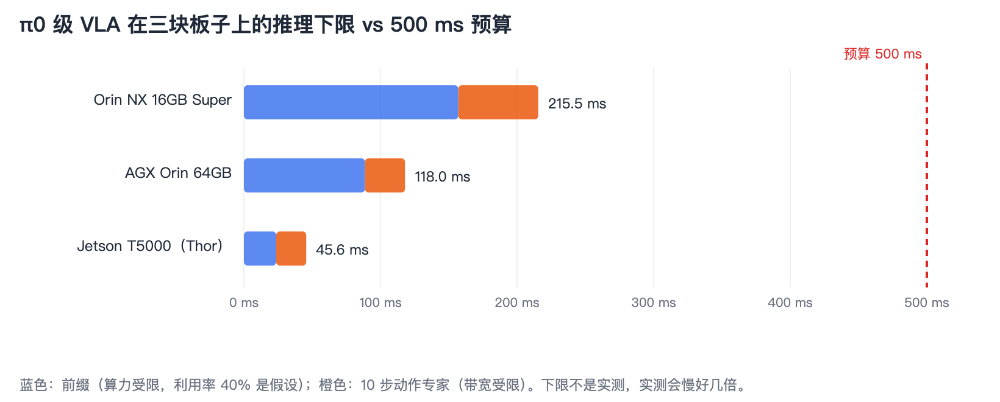

第 8 章 · 综合案例：把一个 π0 级 VLA 装上机器人
本地运行
git clone https://github.com/wikieden/robot-edge-inference
cd robot-edge-inference/code/notebooks
pip install jupyterlab torch numpy
jupyter lab ch08_case_study.ipynb也可以下载后直接用 VS Code 打开 .ipynb 运行。需要 GPU 的章节在 Colab 里选「代码执行程序 → 更改运行时类型 → GPU」。
本章回答：把前七章串起来，给一个 3.3B 的 VLA 挑板子、算预算、定优化顺序，最后上车前要检查什么？
编写日期：2026-11-26 · 上一章：第 7 章 功耗与端云分工
对应原文：vla-deep-dive/materials/text/papers/pi0-2410.24164.txtL255（H = 50）、L302–L306（3.3B = 3B VLM + 300M 动作专家）、L938–L940（每执行 25 步推理一次）、Table I L942–L951（10 步 flow）；模组参数见 附录 · 材料来源；GR00T 2 Thor 实测见 gr00t2 第 10 章；smolvla-2506.01844.txt（0.45B 小模型）
本章缩写：flow = flow matching（流匹配，π0 用来生成动作的方法，讲义见 vla-deep-dive 第 8 章）· 动作专家 = π0 里专门出动作的 300M 小网络 · OTA = Over-The-Air（空中升级）· watchdog = 看门狗（超时没收到心跳就触发保护）· tegrastats = Jetson 上看内存、功率、温度的命令 · jetson_clocks = 把 Jetson 频率锁到当前档位上限的命令。全部缩写见附录 · 缩写与术语表
讲解
第一步：题目和容量（2026-11-26）
题目：一台双臂机器人，控制 50 Hz，用一个 π0 级的 VLA：3.3B 参数（3B 视觉语言部分 + 300M 动作专家，L302–L306），动作块 \(H = 50\)，每执行 25 步推理一次（L938–L940）。候选三块板子：Orin NX 16GB（Super）、AGX Orin 64GB、Jetson T5000（Thor）。
时间预算（第 1 章第二步）：每执行 25 步推理一次，\(25 \times 20 = 500\) ms 内必须回来。用异步执行时（第 6 章第二步），这就是 \(g = 0.5\) 的情况。
容量（第 3 章第四步）：bf16 权重 \(3.3 \times 2 = 6.6\) GB，系统预留 3 GB（编的）。三块板子留给模型的空间分别约 13、61、125 GB，都放得下。
一句话：先把预算（500 ms）和容量（6.6 GB）定下来，三块板子都过了容量这一关。
第二步：两段下限（2026-11-26）
π0 一次推理分两段，卡住它们的东西不一样（第 3 章第三步）：
- 前缀（3 张图 + 文字，816 个 token，48 个文字 token 是编的）：算力受限。运算量 \(2 \times 3 \times 10^9 \times 816 = 4.9 \times 10^{12}\)，除以"稠密算力 × 利用率 40%"；
- 动作专家（10 步 flow）：每步都把 300M 参数（bf16 0.6 GB）读一遍，带宽受限：\(10 \times 0.6\ \text{GB} \div \text{带宽}\)。
假设（都要在真机上校准）：利用率 40%；AGX Orin 和 NX 用稠密 INT8 算力（138、78）；Thor 用 FP8 稠密，按官方 FP4 稀疏 2070 的 1/4 估成 517.5（稀疏 → 稠密 ÷ 2，FP4 → FP8 再 ÷ 2）。
| 板子 | 前缀下限 | 动作专家下限 | 合计 |
|---|---|---|---|
| Orin NX 16GB（Super） | 156.9 ms | 58.6 ms | 215.5 ms |
| AGX Orin 64GB | 88.7 ms | 29.3 ms | 118.0 ms |
| Jetson T5000（Thor） | 23.7 ms | 22.0 ms | 45.6 ms |

一句话：前缀按算力算、动作专家按带宽算，加起来是下限；三块板子的下限都在 500 ms 以内。
第三步：余量够不够（2026-11-26）
下限不是实测。实际会慢多少？参考 GR00T 2 在 Thor 上的经验：没优化的 eager PyTorch 是 720 ms，全部优化后 124 ms，差了 5.8 倍（第 5 章第三步）。
| 板子 | 预算 ÷ 下限 | 粗估"没优化"（下限 × 5.8） | 结论 |
|---|---|---|---|
| Orin NX 16GB（Super） | 2.3 倍 | 约 1250 ms | 必须优化，而且优化后仍很紧 |
| AGX Orin 64GB | 4.2 倍 | 约 684 ms | 超预算，做完量化和 TensorRT 才行 |
| Jetson T5000（Thor） | 11.0 倍 | 约 265 ms | 不优化也在预算内，余量大 |
"下限 × 5.8"只是粗估，不同模型、不同代码差很多，最终要实测。但它说明了一件事：余量不到 5 倍的板子，第 4、5 章的优化不是可选项。
怎么选： - 预算充足、要跑更大的模型或更多路相机 → Thor； - 成本和功耗敏感 → AGX Orin，按第四步的顺序做优化； - Orin NX 跑这个模型很勉强，可以考虑换小模型：SmolVLA 只有 0.45B（论文 L578），配合异步推理，设计目标就是消费级 GPU 甚至 CPU。
一句话：预算 ÷ 下限就是余量；余量小于 5 倍，先做量化和 TensorRT 再上车。
第四步：优化顺序和上车检查清单（2026-11-26）
优化顺序（照 GR00T 2 的做法，每一步都测一次、都过验收）：
| 顺序 | 做什么 | 哪一章 | 要验收吗 |
|---|---|---|---|
| 1 | 去掉重复计算（文本特征只算一次、预计算时间步） | 第 5 章 | 输出应完全不变 |
| 2 | TensorRT 编译视觉编码器和主干 | 第 5 章 | 数值比对 |
| 3 | CUDA Graph 录下固定形状的部分 | 第 5 章 | 输出应完全不变 |
| 4 | FP8 / INT8 / int4 量化 | 第 4 章 | 数值 → 仿真 → 真机 |
| 5 | 减少 flow 步数 | — | 数值 → 仿真 → 真机 |
| 6 | 异步执行 + RTC 平滑衔接 | 第 6 章 | 真机看平滑度 |
上车前检查清单：
- [ ] 锁版本：JetPack、TensorRT、模型权重、引擎文件一起打版本号；引擎在目标板上构建（第 5 章第二步）。
- [ ] 测在真实条件下：实际功率档位、热稳定后、全部相机都开着，跑几百次看 p99（第 6 章第四步、第 7 章第二步）。
- [ ] 内存留余量：用
tegrastats看峰值内存，不要贴着上限跑。 - [ ] 超时兜底：推理进程挂了或超时，控制器用 watchdog 检测，停稳或保持当前姿态（机器人软硬件架构第 10 章）。
- [ ] 断网能活：所有必须在机器人上的部分不依赖网络（第 7 章第四步）。
- [ ] 能回滚：OTA 升级失败时能回到上一个能用的版本。
测的时候常用的几条命令（Jetson 上的真实命令）：
sudo nvpmodel -q # 看当前功率模式
sudo jetson_clocks # 把频率锁到当前档位上限，测出来的数更稳定
tegrastats --interval 500 # 每 0.5 s 打印内存、CPU / GPU 占用、功率和温度
一句话：按"不改输出的先做、改输出的后做"的顺序优化，每步验收；上车前在真实条件下测 p99，准备好超时、断网、回滚三条退路。
动画演示：三块板子的下限和余量

可交互版：animations/08-case-study.html（滑块：实际利用率）
怎么看：
- 蓝色是前缀（算力受限），三块板子差别最大（第二步）；
- 橙色是 10 步动作专家（带宽受限）（第二步）；
- 红虚线是 500 ms 预算，三块下限都在线内（第三步）；
- 乘上 5.8 倍粗估"没优化"：两块 Orin 都超了，只剩 Thor（第三步）；
- 拖滑块：利用率从 40% 降到 20%，看哪块板子先超预算。
练习与作答记录
题 1（第二步）：如果把动作专家量化成 int4（每个参数 0.5 字节），AGX Orin 上 10 步动作专家的带宽下限变成多少 ms？
作答：（待作答）
题 2（第三步）：机器人改成 30 Hz 控制、每执行 15 步推理一次。预算变成多少 ms？AGX Orin 的余量（预算 ÷ 118.0 ms）是多少倍？
作答：（待作答）
题 3（第四步）：为什么"去掉重复计算""CUDA Graph"放在量化之前做？
作答：（待作答）
口诀
先定预算再定容量，三块板子都放下；
前缀按算力，动作按带宽，加起来是下限；
预算除下限看余量，不到五倍先优化；
不改输出的先做，超时断网要回滚。
本章复习卡片
附录 · 延伸阅读
留给以后深入学习用，不影响本章主线。★ 是建议先读的。
推荐阅读
| 读什么 | 读哪里 | 读它为了什么 |
|---|---|---|
| ★ GR00T 2 部署章 | gr00t2 第 10 章 | 一个真实 VLA / WAM 在 Thor 上的完整部署记录 |
| ★ VLA 讲义 · π0 | vla-deep-dive 第 8 章 | π0 的结构：VLM 前缀 + 动作专家 + flow |
| SmolVLA 论文 | vla-deep-dive/materials/text/papers/smolvla-2506.01844.txt L106–L119、L578 |
0.45B 小模型怎么为端侧设计 |
| 高效 VLA 综述 | vla-deep-dive/materials/text/papers/survey-efficient-vla-2510.24795.txt |
端侧 VLA 的方法地图 |
| VLA 面试资料 · 模型选型与真机迁移 | vla-deep-dive 面试资料 | 选型时还要看的非性能因素（许可、生态） |
数学原理
- 两段下限相加：前缀和动作专家是先后执行的，下限直接相加；如果两段能并行（比如前缀和上一块的动作专家重叠），就要按关键路径算。
- 余量：预算 ÷ 下限。它告诉你"实际可以比下限慢几倍还来得及"。
公式清单
| 公式 | 意思 |
|---|---|
| 前缀下限 \(= 2NT \div (\text{稠密算力} \times u)\) | \(u\) 是利用率 |
| 动作下限 \(= \text{步数} \times \text{专家字节} \div \text{带宽}\) | 10 步 × 0.6 GB |
| 余量 \(=\) 预算 \(\div\) 下限 | 不到 5 倍先优化 |
代码对照：把本章的数字用代码算一遍
纯 Python，不需要安装任何库。代码在仓库本地
ai-infra-edge/solutions/chapter-code/ch08_case_study.py，配套测试tests/test_chapters.py::test_ch08，notebook 在notebooks/ch08_case_study.ipynb。Mac 上直接能跑，不需要 GPU：
bash cd ai-infra-edge/solutions/chapter-code uv run python ch08_case_study.py # 一步一步打印 uv run pytest tests/test_chapters.py -k ch08
讲义 ↔ 代码（π0 的结构来自论文；利用率 40%、816 个 token、Thor FP8 稠密按 FP4 稀疏的 1/4、预留 3 GB 是假设）：
| 讲义 | 公式 | 写法 | 跑出来 |
|---|---|---|---|
| 第一步 容量 | \(6.6 \le\) 总 \(- 3\) | plan(name)["fits"] |
三块都放得下 |
| 第二步 AGX Orin 前缀 | \(4.9\text{e}12 \div (138\text{e}12 \times 0.4)\) | prefix_ms(138) |
88.7 ms |
| 第二步 AGX Orin 动作专家 | \(10 \times 0.6 \div 204.8\) | action_ms(204.8) |
29.3 ms |
| 第二步 Thor 合计 | 两段相加 | plan("Jetson T5000（Thor）")["total"] |
45.6 ms |
| 第三步 余量 | \(500 \div\) 下限 | plan(name)["margin"] |
2.3 / 4.2 / 11.0 倍 |
关键几行：
def prefix_ms(dense_tops, params=3e9, tokens=816, util=0.4):
return 2 * params * tokens / (dense_tops * 1e12 * util) * 1000 # 前缀：算力受限
def action_ms(bw_gbps, expert_gb=0.6, steps=10):
return steps * expert_gb / bw_gbps * 1000 # 动作专家：带宽受限
代码里才看得到的 2 件事：
- 前缀里没算 3 路图像编码器（SigLIP）单独的读写，也没算动作专家对前缀 KV 的读取；都是偏乐观的地方，真机上会更慢。
- Thor 的 FP8 稠密算力是按"FP4 稀疏 ÷ 4"推的，官方产品页没直接给这个数；换算方式写在
DEVICES的注释里，查到数据表后要替换。
自己改一改（不影响练习答案）：
- 把
util改成 0.2，看哪块板子的余量先跌破 2 倍。 - 把
tokens改成 2 路相机（560 个），看前缀能省多少。